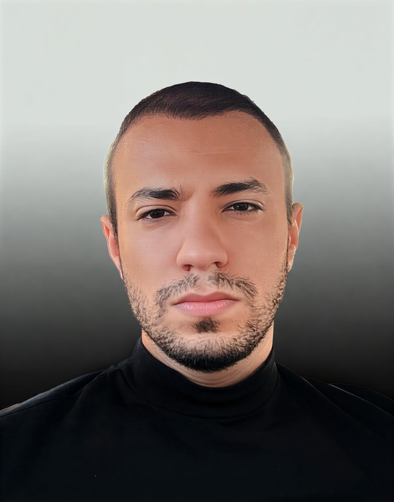

01
Product & UX Design
Problem framing, information architecture, user journeys, interaction design, wireframes, prototypes and interface design.
Profile / International

I’m Jawher Hamdi. I design useful products and the systems behind them.
My work spans biometric self-service, enterprise software and payment experiences at TLScontact, FORVIA and Addinn Group. I connect research with clear flows, interfaces and reusable patterns.
An art-direction background informs my eye for detail. I work closely with product owners, engineers and designers from discovery through delivery.
Capabilities / 01—04
01
Problem framing, information architecture, user journeys, interaction design, wireframes, prototypes and interface design.
02
Stakeholder interviews, competitor analysis, UX audits, personas, journey mapping, usability testing and insight synthesis.
03
Visual foundations, component libraries, responsive patterns, interaction states, documentation and design review with engineers.
04
Visual language, composition, storytelling and creative quality. A complementary practice explored through my independent studio.
Experience
TLScontact
Lead UX/UI for a next-generation biometric kiosk, from discovery and research across 10 international visa centres to user journeys, prototypes, usability validation and delivery recommendations. Align product, operations and technology teams around clear, accessible self-service experiences.
FORVIA Faurecia / Palantir Foundry
Led enterprise UX, interface audits, reusable design patterns, designer critique and stakeholder workshops. Documented a shared system for dashboards and operational applications.
Addinn Group / Digital services
Connected product discovery, stakeholder research, journey mapping and interface design. Developed payment-service experiences, prototypes and a visual system for communicating product decisions.
Side project / MPRV Co.
I also lead MPRV Co., my independent creative studio, previously presented as Jay Studio. It brings together art direction, film, photography and creative production. That work has its own home, while this portfolio focuses on my product and UX practice.
Bring the starting point